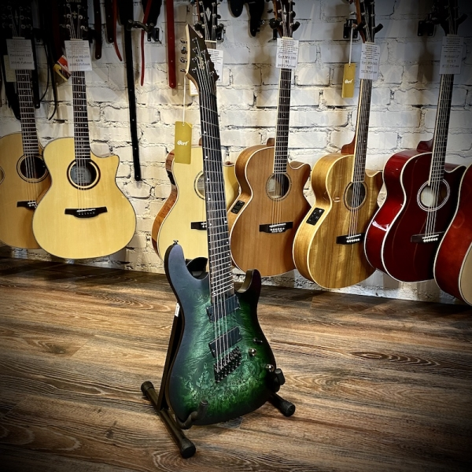
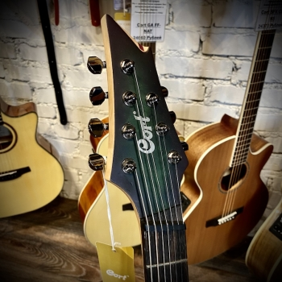
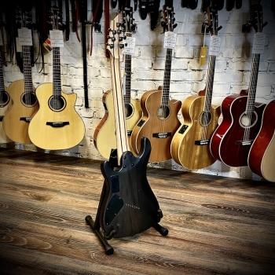

Электрогитара
  Электрогитара — это икона современной музыки, символ революции в звуке и стиле. С её уникальной способностью производить широкий спектр тонов и эффектов, она стала неотъемлемой частью рок-н-ролла, блюза, джаза и многих других жанров. Электрогитара обладает твердым телом, которое не резонирует так же, как у акустических гитар, что позволяет использовать электронные усилители для создания и усиления звука.
С помощью магнитных звукоснимателей, которые преобразуют вибрации струн в электрический сигнал, электрогитара может достигать громкости и звучания, недостижимых для акустических инструментов. Это открывает возможности для использования различных педалей эффектов и усилителей, чтобы создавать новые звуки и текстуры.
Визуально электрогитары часто выделяются своими смелыми и инновационными дизайнами, от классических форм до экстравагантных и современных. Они могут быть украшены разнообразными отделками и цветами, что делает каждую гитару выразительным инструментом личности музыканта.
Электрогитара не просто инструмент — это портал в мир творчества, позволяющий музыкантам выражать себя и вдохновлять слушателей на протяжении десятилетий. Она продолжает быть важной частью музыкальной культуры, постоянно развиваясь и адаптируясь к новым музыкальным направлениям и технологиям.